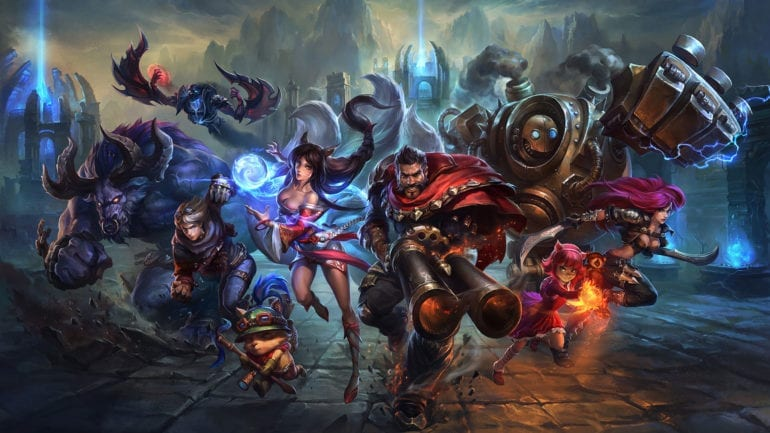

The World of Arcane
Arcane is set in the world of Runeterra, a rich and diverse world full of numerous sapient species spread across it's 3 continents, Valoran, Shurima, and the Camavoran continent, and it's 2 vast oceans with scattered archipelagos. The first season of Arcane takes place within Valoran and below we will explore the 3 locations that have been revealed so far.

Map of Runeterra
Season 1 Locations

Piltover is the first of the sister cities to be revealed

While Zaun is the sister city of Piltover it is a stark contrast to it's high class society and innovation.

Noxus is the original home of Mel

Characters
Arcane is filled with interesting and diverse characters, and the writers have done a great job
Season 1 Main Characters
- Violet A.K.A Vi
- Powder A.K.A Jinx
- Vander
- Ekko
- Jayce Talis
- Viktor
- Caitlyn Kiramman
- Mel Medarda
- Cecil B. Heimerdinger
- Silco
- Singed
- Sevika